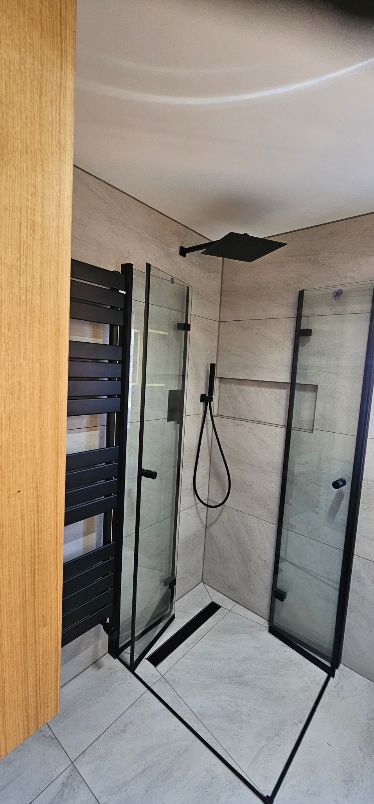
01
Bathroom refurbishments
Complete bathroom transformations including plumbing, tiling, fitted furniture, lighting and finishing work.
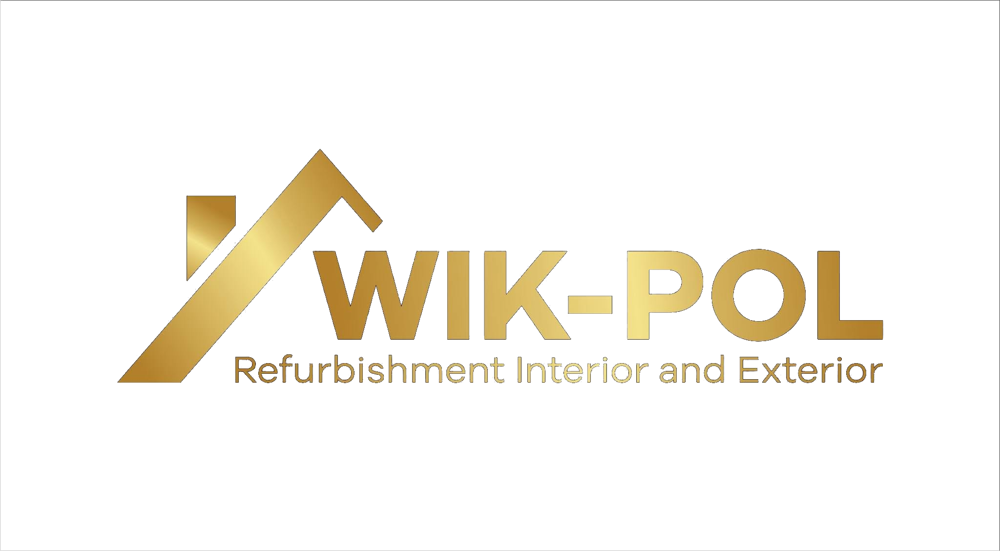
07712 464409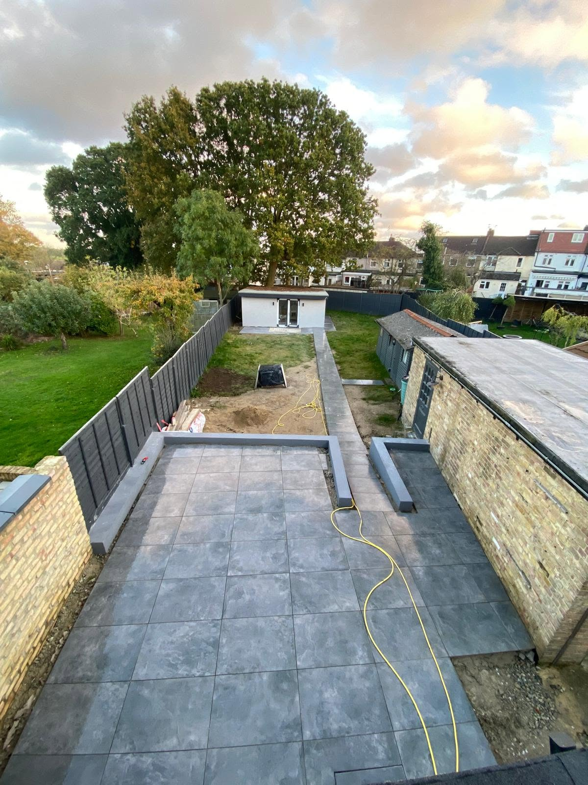
High-quality refurbishment and building work with reliability, care and attention to detail — from luxury bathrooms and interior finishes to extensions, exterior work and full property transformations.
From small fixes to full-scale projects, Wik-Pol delivers interior and exterior refurbishment with quality workmanship, dependable service and a finish that looks right.

Complete bathroom transformations including plumbing, tiling, fitted furniture, lighting and finishing work.
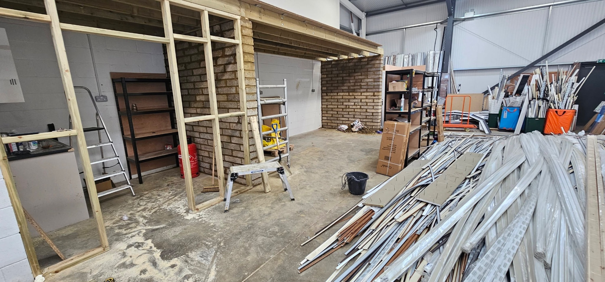
Room renovations, partitions, dry lining, suspended ceilings and complete interior finishing.
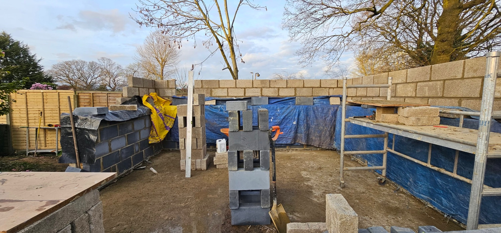
Extensions, structural work, blockwork and larger property improvement projects.
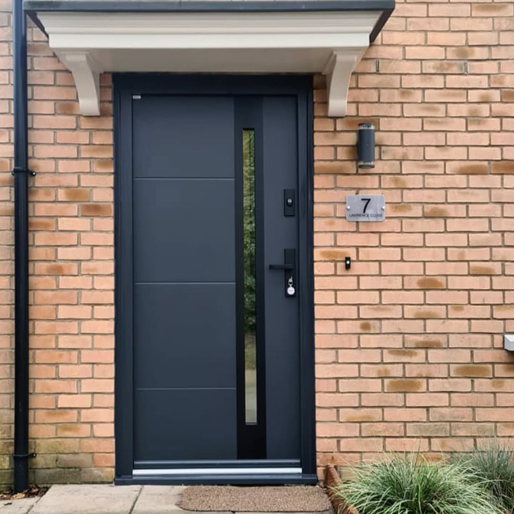
Exterior refurbishment, rendering, insulation and finishing work.
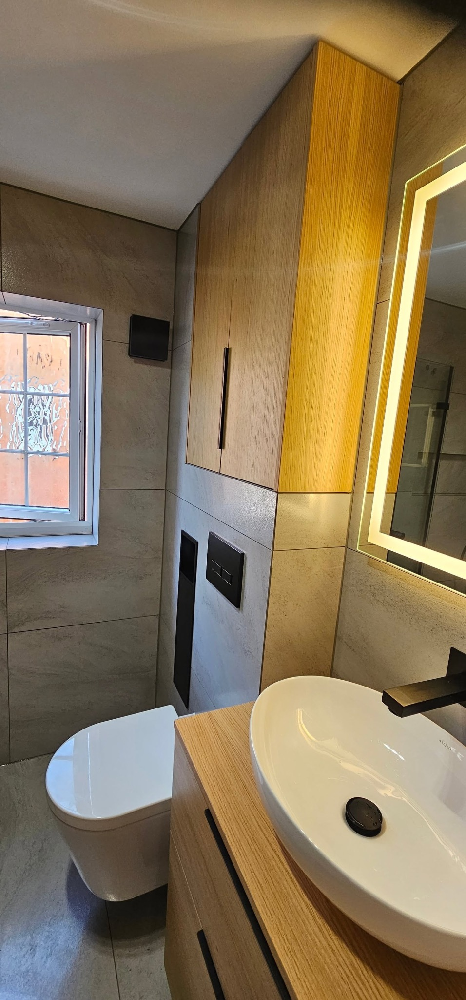
Tiling, flooring, laminate, painting, plastering, wallpapering and detailed finishing.
From the first conversation through to the final details, Wik-Pol keeps standards high and the project moving.
Actual Wik-Pol projects supplied by the business.
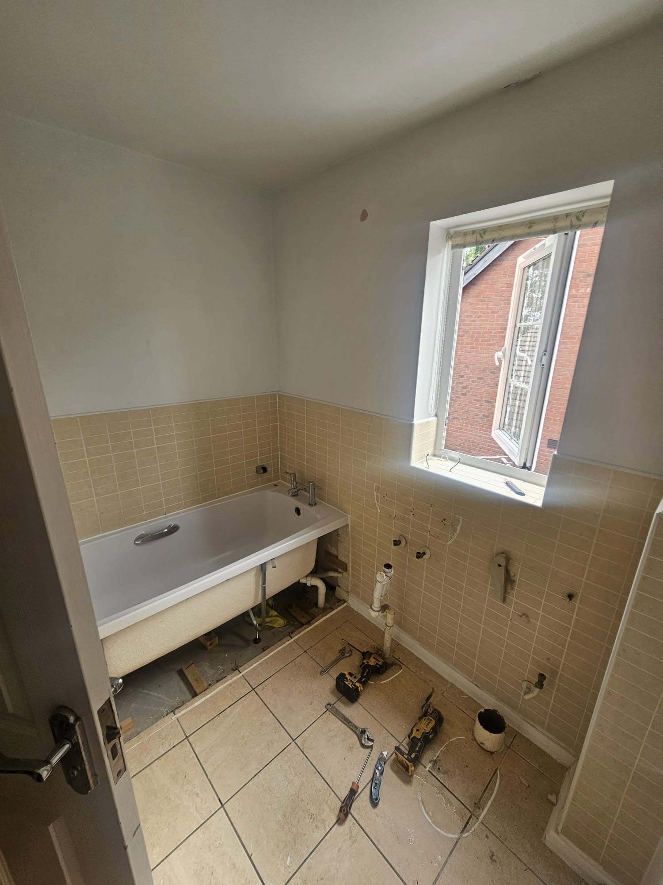
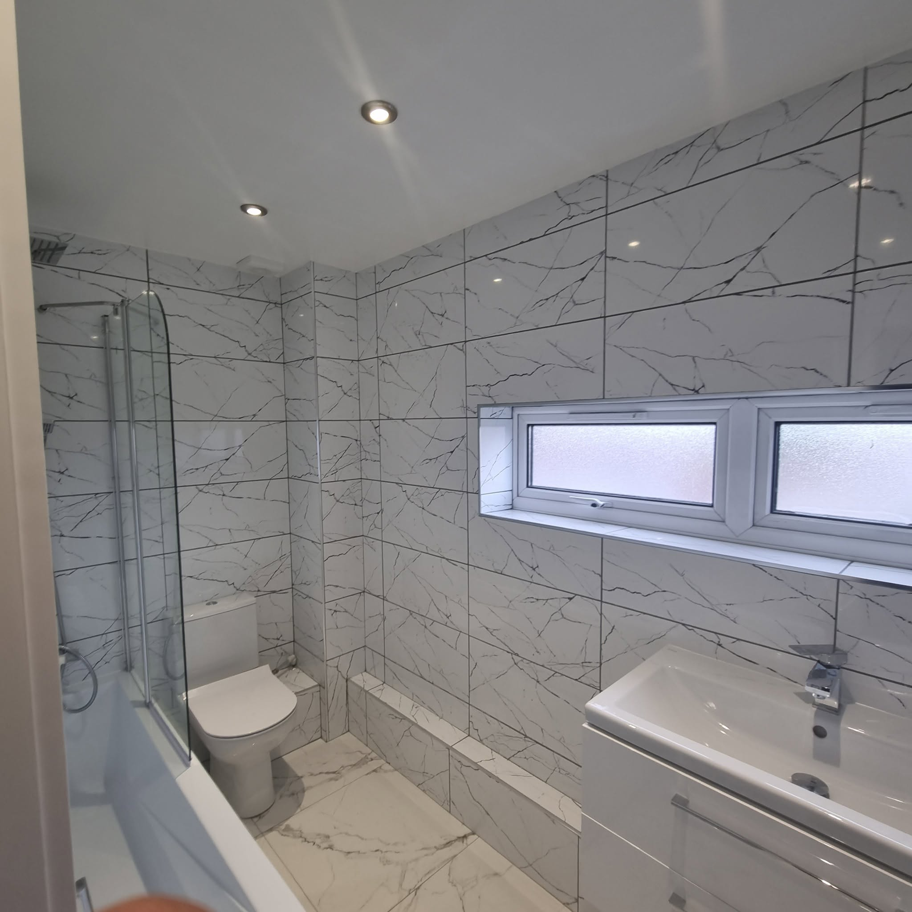
Clear communication, careful workmanship and attention to detail on every job, whether it is one room or a larger refurbishment.
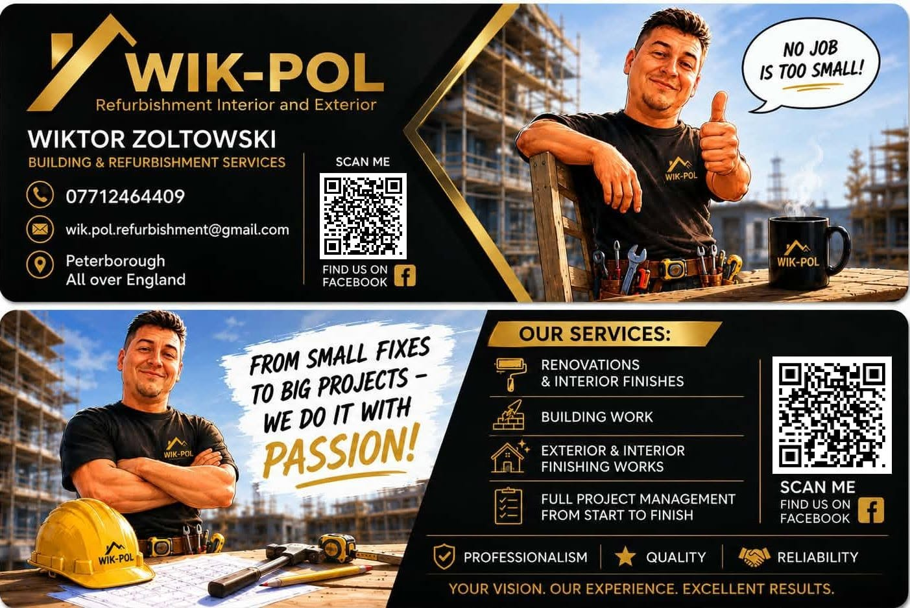
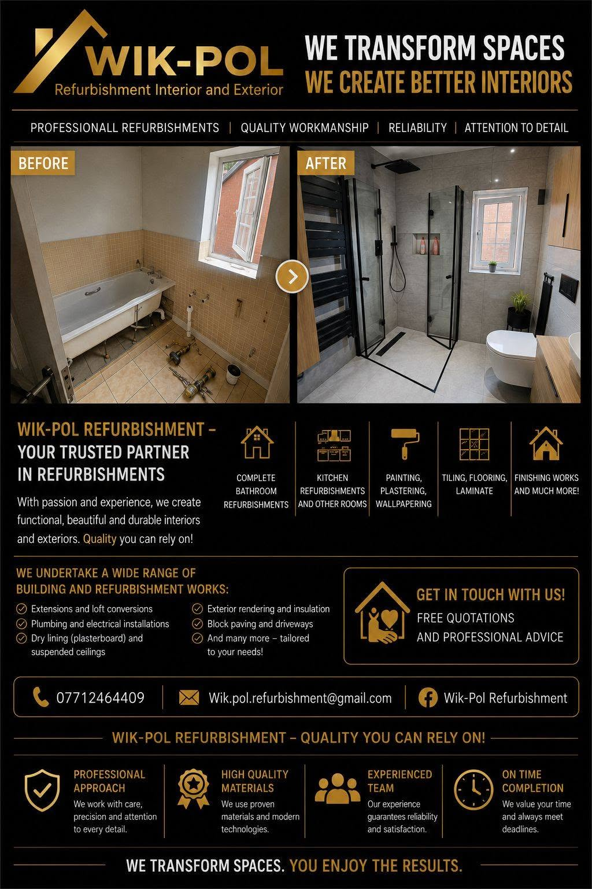
Call, email or WhatsApp Wik-Pol Refurbishment to discuss your project.